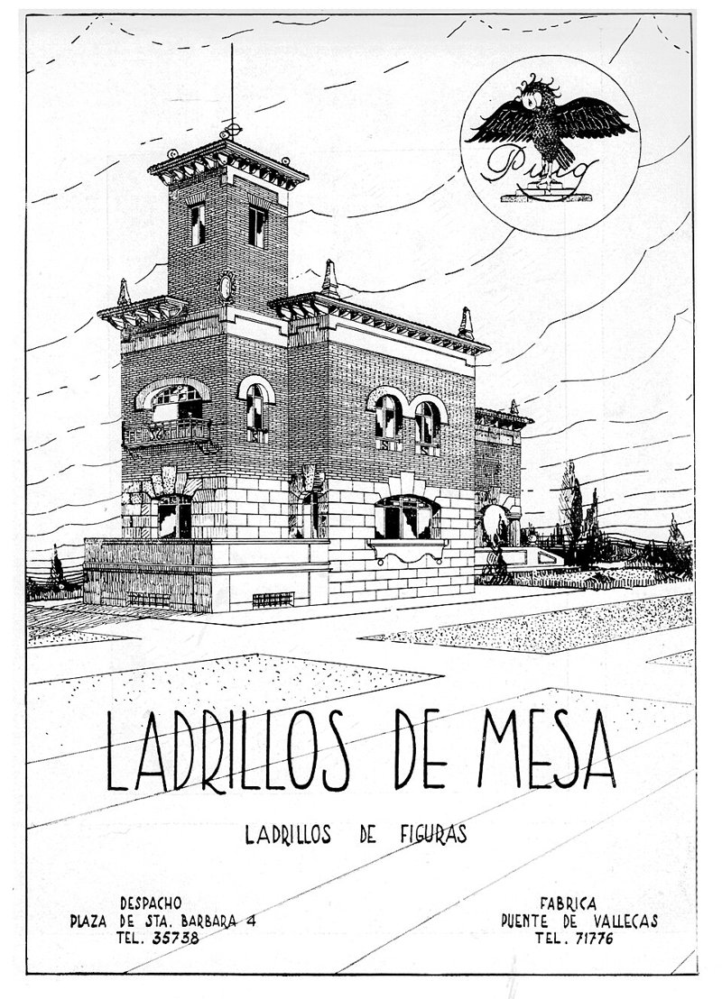

<title>Los pueblos que ya no existen</title>
<link rel="stylesheet" href="https://fonts.googleapis.com/css2?family=Literata:opsz,wght@7..72,400;7..72,600;7..72,800&family=Barlow+Semi+Condensed:wght@400;500;600&display=swap">
<style>
/* Layout: una columna de lectura de ~65ch; los gráficos se abren algo más anchos */
:root{
  --bg:#fbfaf8; --fg:#1d1a1c; --muted:#5d585b; --rule:#e2dddf; --grid:#ebe7e8;
  --comuns:#a2275f; --muni:#1b8fa8; --other:#d9d4d6; --tipbg:#1d1a1c; --tipfg:#fbfaf8;
  --serif:"Literata",Georgia,"Times New Roman",serif;
  --ui:"Barlow Semi Condensed","Arial Narrow",Arial,sans-serif;
}
@media (prefers-color-scheme: dark){:root:not([data-theme="light"]){
  --bg:#18161a; --fg:#f1edef; --muted:#b5aeb2; --rule:#343036; --grid:#2c282e;
  --comuns:#d0679a; --muni:#2a9ab4; --other:#3e393f; --tipbg:#f1edef; --tipfg:#18161a; color-scheme:dark}}
:root[data-theme="dark"]{
  --bg:#18161a; --fg:#f1edef; --muted:#b5aeb2; --rule:#343036; --grid:#2c282e;
  --comuns:#d0679a; --muni:#2a9ab4; --other:#3e393f; --tipbg:#f1edef; --tipfg:#18161a; color-scheme:dark}
body{background:var(--bg);color:var(--fg);font-family:var(--serif);font-size:18px;line-height:1.62}
main{max-width:46rem;margin:0 auto;padding-block:2.5rem 4rem;padding-inline:16px}
.draft{font-family:var(--ui);font-size:.85rem;letter-spacing:.06em;text-transform:uppercase;color:var(--muted);border:1px solid var(--rule);display:inline-block;padding:.15rem .5rem;border-radius:3px}
h1{font-size:clamp(1.8rem,5vw,2.6rem);line-height:1.12;font-weight:800;text-wrap:balance;margin:.8rem 0 .9rem}
.dek{font-size:1.15rem;line-height:1.5;color:var(--muted);margin:0 0 1rem}
.byline{font-family:var(--ui);font-size:.95rem;color:var(--muted);border-top:1px solid var(--rule);padding-top:.6rem}
h2{font-size:1.35rem;line-height:1.25;margin:2.4rem 0 .6rem;text-wrap:balance}
p{margin:0 0 1rem}
ul{padding-left:1.2rem;margin:0 0 1rem} li{margin-bottom:.35rem}
figure{margin:1.8rem 0 2rem;font-family:var(--ui)}
figcaption .t{font-weight:600;font-size:1.1rem;display:block;line-height:1.25}
figcaption .s{color:var(--muted);font-size:.98rem;display:block;margin-top:.15rem}
.src{color:var(--muted);font-size:.85rem;margin-top:.4rem}
.chart{position:relative;margin-top:.7rem}
svg{display:block;width:100%;height:auto;overflow:visible}
svg text{font-family:var(--ui);fill:var(--muted);font-size:13px}
svg .lab{fill:var(--fg);font-weight:600}
.legend{display:flex;flex-wrap:wrap;gap:.4rem 1.1rem;font-size:.95rem;color:var(--fg);margin-top:.4rem}
.legend span{display:inline-flex;align-items:center;gap:.4rem}
.sw{width:14px;height:14px;border-radius:3px;display:inline-block}
.maps{display:grid;grid-template-columns:1fr 1fr;gap:12px}
.maps h3{font-family:var(--ui);font-size:1rem;margin:0 0 .3rem;font-weight:600}
.maps h3 b{color:var(--comuns)}
.tip{position:absolute;pointer-events:none;background:var(--tipbg);color:var(--tipfg);font-family:var(--ui);font-size:.9rem;line-height:1.3;padding:.35rem .55rem;border-radius:4px;white-space:nowrap;z-index:5;transform:translate(-50%,-115%)}
.tbl{overflow-x:auto} table{border-collapse:collapse;font-family:var(--ui);font-size:.98rem;width:100%;font-variant-numeric:tabular-nums}
th,td{text-align:left;padding:.3rem .5rem;border-bottom:1px solid var(--rule)} td.n,th.n{text-align:right}
details{font-family:var(--ui);margin-top:.5rem} summary{cursor:pointer;color:var(--muted)}
a{color:var(--comuns)} a:focus-visible,summary:focus-visible{outline:2px solid var(--comuns);outline-offset:2px}
.foot{font-family:var(--ui);font-size:.95rem;color:var(--muted);border-top:1px solid var(--rule);margin-top:2.5rem;padding-top:.8rem}
@media (max-width:520px){body{font-size:17px}.maps{gap:8px}}
</style>
<style>:root{--pp:#1d84ce;--psoe:#e30613;--vox:#5ac035;--fp:#b3001b;--der:#24366b;--sumar:#a2275f;--neu:#1d7f95}@media (prefers-color-scheme: dark){:root:not([data-theme="light"]){--pp:#4fa8ea;--psoe:#ff5a5f;--vox:#74d651;--fp:#ff6b70;--der:#7d8fc9;--sumar:#d0679a;--neu:#3aa6bf}}:root[data-theme="dark"]{--pp:#4fa8ea;--psoe:#ff5a5f;--vox:#74d651;--fp:#ff6b70;--der:#7d8fc9;--sumar:#d0679a;--neu:#3aa6bf}</style>
<style>.caja{border-left:3px solid var(--rule);background:color-mix(in srgb,var(--fg) 4%,transparent);padding:.8em 1em;margin:1.4em 0;border-radius:0 4px 4px 0}.caja p{margin:0}</style>

<style>.mapa svg path.p{fill:var(--other);stroke:var(--bg);stroke-width:.6}.mapa circle{stroke:var(--bg);stroke-width:.6;fill-opacity:.85}.mini{display:grid;grid-template-columns:repeat(2,1fr);gap:10px 16px}.mini h3{font-family:var(--ui);font-size:1rem;margin:0;font-weight:600}@media (max-width:520px){.mini{grid-template-columns:1fr}}</style>
<style>.mapa-img{width:100%;height:auto;display:block}.sw.dd{background:color-mix(in srgb,var(--der) 32%,var(--bg))}.sw.ii{background:color-mix(in srgb,var(--fp) 32%,var(--bg))}.sw.di{background:var(--psoe)}.sw.id{background:var(--pp)}.cita{border-left:3px solid var(--fp);padding:.2em 0 .2em 1em;margin:1.4em 0;font-size:1.08rem}</style>
<style>.cita{border-left:3px solid var(--fp);padding:.2em 0 .2em 1em;margin:1.4em 0;font-size:1.08rem}.foto-h{margin:1.6em 0}.foto-h img{width:100%;height:auto;display:block;border-radius:4px}.foto-h figcaption{font:13px/1.45 var(--ui);color:var(--muted);margin-top:.5em}.foto-v{max-width:420px;margin-left:auto;margin-right:auto}</style>
<main>
<span class="draft">Borrador para revisión · no publicado</span>
<h1>Vallecas dio el 86 % al Frente Popular y Franco la borró del mapa: los 1.334 pueblos que votaron en 1936 y ya no existen</h1>
<p class="dek">Uno de cada siete municipios que votaron en febrero de 1936 ya no existe. Trece se los tragó el Gran Madrid de la posguerra, y en nueve de ellos había ganado la izquierda. Más de mil desaparecieron en los años sesenta y setenta, por decreto y casi siempre por pobreza. Así votaban y así votan hoy los lugares donde estaban.</p>
<div class="byline">Nacho G. del Álamo · 23 de octubre de 2026</div>
<p data-tipo="contexto" style="margin-top:1.4rem">En la fachada de ladrillo de la Junta Municipal de Chamartín, en el número 142 de la calle del Príncipe de Vergara, hay una placa con forma de rombo. Dice: «En memoria y reconocimiento de la labor de la última corporación democrática de Ayuntamiento de Chamartín de la Rosa, anterior a marzo de 1939». La descubrieron el 15 de enero de 2019, en los setenta años de la anexión del municipio a Madrid, según la nota del Ayuntamiento que acompaña la <a href="https://commons.wikimedia.org/wiki/File:Chamart%C3%ADn_homenajea_con_una_placa_a_la_%C3%BAltima_corporaci%C3%B3n_democr%C3%A1tica_de_Chamart%C3%ADn_de_la_Rosa_01.jpg">foto en Wikimedia Commons</a>.</p>
<p data-tipo="contexto">Chamartín de la Rosa fue anexionado a Madrid el 5 de junio de 1948. Era «el primer municipio de la periferia madrileña en incorporarse a su término», y su término se partió en dos distritos nuevos, Tetuán y Chamartín, según la <a href="https://es.wikipedia.org/wiki/Chamart%C3%ADn_de_la_Rosa">Wikipedia</a>.</p>
<p data-tipo="dato">El 16 de febrero de 1936, Chamartín de la Rosa tenía 20.231 electores. Votó el 74%, y el Frente Popular sacó el 80,5% de los votos a candidatos, según el <a href="https://doi.org/10.34810/data3274">Atlas Electoral de la Segunda República</a> de la Universitat Pompeu Fabra. En la ciudad de Madrid, la de entonces, el Frente Popular se quedó en el 54,4%.</p>
<p data-tipo="dato">El Atlas tiene datos de 1936 de 8.853 municipios. De ellos, 1.334 ya no existen: el 15%. Tenían 479.345 electores. Son los que se juntaron con un vecino, los que absorbió una ciudad y los que se vaciaron hasta que no quedó nadie para formar un ayuntamiento.</p>

<h2>Trece pueblos para un Gran Madrid</h2>
<p data-tipo="contexto">«Trece fueron los municipios que fueron agregados a la ciudad de Madrid entre 1948 y 1954», escribe Pablo Rivas en <a href="https://www.elsaltodiario.com/urbanismo/anexion-municipos-gran-madrid-superar-barcelona-13-pueblos">El Salto</a>. El término pasó de 68 a 607 kilómetros cuadrados y ganó 330.000 habitantes. Chamartín de la Rosa y los dos Carabancheles entraron en 1948; Barajas, Canillas, Canillejas, Hortaleza y Vallecas, en 1950; Aravaca, Fuencarral, El Pardo y Vicálvaro, en 1951. Villaverde, «prácticamente destruido durante la Guerra Civil», fue el último, en 1954.</p>
<p data-tipo="contexto">Los vecinos no votaron nada. El historiador Antonio García Martín, autor de un estudio sobre aquel proceso, dice que los ayuntamientos y sus habitantes asistieron «como invitados de piedra». El 27 de abril de 1948, el último alcalde de Carabanchel Bajo, Rufino Goñi, se despidió de sus vecinos con un bando que terminaba así, según el mismo reportaje:</p>
<p class="cita" data-tipo="contexto">«¡Viva Carabanchel Bajo en el Gran Madrid! ¡Viva Franco, que lo forja para engrandecimiento de España!».<br><small>Último bando del alcalde de Carabanchel Bajo, 27 de abril de 1948, citado por <a href="https://www.elsaltodiario.com/urbanismo/anexion-municipos-gran-madrid-superar-barcelona-13-pueblos">El Salto</a>.</small></p>
<p data-tipo="contexto">¿Por qué esos pueblos? El urbanista Álvaro Ardura lo explicó en el <a href="https://es.ara.cat/cultura/gran-madrid-plan-franco-superar-barcelona_130_4626292.html">Ara</a>: «Había una voluntad clara de Franco para que Madrid superara a Barcelona». En los años treinta, Barcelona había llegado a tener más habitantes. El periodista Rafael Fraguas, que ha investigado las anexiones, añade otra razón en El Salto: aquellos municipios «habían permanecido en la esfera de la República y ninguno se había alzado». Y lo resume así: «ahí vivían los rojos, ahí se alzaron contra el alzamiento y ahí mantuvieron el tipo durante tres años ejércitos de albañiles en Usera y en Vallecas».</p>
<figure class="foto-h foto-v"><figcaption>Anuncio de una fábrica de ladrillos de Puente de Vallecas en la revista <i>Arquitectura</i>, julio de 1930. Autor desconocido, <a href="https://commons.wikimedia.org/wiki/File:1930_ARQUITECTURA_23.jpg">dominio público, vía Wikimedia Commons</a>.</figcaption></figure>
<p data-tipo="dato">Los datos de 1936 le dan la razón a esa idea en lo electoral. Los trece municipios sumaban 74.186 electores, y el Frente Popular ganó en nueve. En conjunto sacó el 77,8%, más que en la capital. Vallecas, el más grande, con 21.904 electores, le dio el 86,5%. Chamartín de la Rosa, el 80,5%; Carabanchel Bajo, el 77,0%; Canillas, el 77,9%, y Villaverde, el 80,3%. Las derechas solo ganaron en cuatro, todos pequeños: Aravaca, Barajas, Carabanchel Alto y El Pardo.</p>

<h2>Lo que votan hoy aquellos pueblos</h2>
<figure>
<figcaption><span class="t">Trece pueblos que se comió Madrid</span><span class="s">Voto en febrero de 1936 en cada antiguo municipio y, en julio de 2023, en los distritos que ocupan hoy su término</span></figcaption>
<div class="chart" id="gm"></div>
<div class="legend"><span><i class="sw" style="background:var(--fp)"></i>Frente Popular, 1936</span><span><i class="sw" style="background:var(--other)"></i>Centro, 1936</span><span><i class="sw" style="background:var(--der)"></i>Derechas, 1936</span><span><i class="sw" style="background:var(--psoe)"></i>Izquierda, 2023</span><span><i class="sw" style="background:var(--pp)"></i>Derecha, 2023</span></div>
<div class="src">Fuente: Atlas Electoral de la Segunda República (UPF); Ministerio del Interior, por sección censal, sin voto exterior. En 1936, porcentaje sobre los votos a candidatos. En 2023, izquierda: PSOE y Sumar; derecha: PP y Vox. La correspondencia entre pueblos y distritos es aproximada: los límites no coinciden, y Moncloa-Aravaca, por ejemplo, incluye barrios que ya eran de Madrid. Años de anexión, según El Salto. Cálculo propio.</div>
</figure>
<p data-tipo="dato">En julio de 2023, la izquierda sacó el 43,8% en la ciudad de Madrid. En Puente de Vallecas llegó al 64,1%, su máximo; en Villaverde, al 57,5%; en Villa de Vallecas, al 54,4%, y en Carabanchel, al 52,2%. Puente de Vallecas es el distrito más de izquierdas de la ciudad.</p>
<p data-tipo="dato">El norte cuenta otra historia. Tetuán y Chamartín, los dos distritos que ocupan el término de Chamartín de la Rosa, dieron juntos el 32,6% a la izquierda y el 65,6% a la derecha. El distrito de Chamartín, solo, dio el 74,3% a la derecha; únicamente Salamanca, con el 73,1%, la votó más.</p>
<p data-tipo="patron">El pueblo que en 1936 votaba más a la izquierda que Madrid es hoy, en su parte norte, una de las zonas más conservadoras de la ciudad. En el sur, en cambio, el mapa de 2023 se parece al de 1936: Vallecas, Villaverde y Carabanchel siguen votando a la izquierda más que el resto de Madrid.</p>
<p data-tipo="hipotesis">Una explicación posible, que estos datos no prueban, es que el norte cambió de vecinos y el sur no tanto. Sobre el término de Chamartín de la Rosa se levantaron después barrios enteros de clase media y alta. El sur recibió, sobre todo, a la inmigración del campo que llegó a Madrid en los años cincuenta y sesenta, la que el <a href="https://es.ara.cat/cultura/gran-madrid-plan-franco-superar-barcelona_130_4626292.html">Ara</a> llama «la gran inmigración del campo». Comprobarlo exigiría padrones, no urnas.</p>
<p class="cita" data-tipo="contexto">«Perdieron su identidad, se convirtieron en distritos».<br><small>María Teresa Fernández Talaya, historiadora y cronista de la Villa, en <a href="https://www.elsaltodiario.com/urbanismo/anexion-municipos-gran-madrid-superar-barcelona-13-pueblos">El Salto</a>.</small></p>

<h2>Lavadores, Serantes y otras afueras</h2>
<p data-tipo="dato">Madrid no fue la única. Lavadores, en Pontevedra, fue municipio entre 1836 y 1941, y sus parroquias son hoy parte de Vigo, según la <a href="https://es.wikipedia.org/wiki/Lavadores">Wikipedia</a>. En febrero de 1936 tenía 17.751 electores y dio el 85,1% al Frente Popular, una de las cifras más altas de Galicia. Vigo, en 2023, dio el 62,2% a la izquierda.</p>
<p data-tipo="dato">Serantes, que incluía casi todas las parroquias rurales de Ferrol, se anexionó a la ciudad el 21 de enero de 1940 (<a href="https://es.wikipedia.org/wiki/Serantes_(Ferrol)">Wikipedia</a>). En 1936 tenía 6.619 electores y el Frente Popular sacó el 70,9%. Ferrol dio en 2023 el 54,2% a la izquierda. En los dos casos, el municipio que desapareció era más de izquierdas que la ciudad que lo absorbió: Vigo, en 1936, dio el 53,3% al Frente Popular, y Ferrol, el 56,4%.</p>

<h2>Mil pueblos en veinte años</h2>
<p data-tipo="contexto">La gran desaparición no fue en las ciudades. El 31 de mayo de 1966, el Boletín Oficial del Estado publicó varios decretos firmados por Francisco Franco y por el ministro de la Gobernación, Camilo Alonso Vega. El primero de la página dice: «Se aprueba la fusión de los Municipios de Almarza, Cubo de la Sierra, Gallinero, San Andrés de Soria y Tera (Soria) en uno con nombre y capitalidad de Almarza» (<a href="https://www.boe.es/boe/dias/1966/05/31/pdfs/A06801-06802.pdf">BOE</a>).</p>
<p data-tipo="contexto">El decreto explica que los cinco ayuntamientos lo pidieron por «la escasez de sus recursos para afrontar las obligaciones legales mínimas», y que todo se hizo «sin reclamación alguna del vecindario». El siguiente, en la misma página, incorpora Betesa a Arén, en Huesca: el ayuntamiento de Betesa, «obligado por la penuria de sus recursos económicos», pidió desaparecer.</p>
<p data-tipo="dato">En 1936, los cinco pueblos de Soria sumaban 1.168 electores. Votaban al centro y a las derechas más que al Frente Popular; en San Andrés de Soria, el centro llegó al 63,5%. El Almarza de hoy tiene 514 electores. En 2023, el PP sacó el 39,5%, el PSOE el 22,8% y los demás partidos, entre ellos Soria ¡Ya!, el 22,1%. Betesa y Arén tenían 795 electores en 1936. Arén tiene 228, y el PSOE ganó allí en 2023 con el 52,3%.</p>
<p data-tipo="dato">De los 1.334 municipios de 1936 que ya no existen, 1.177 desaparecieron entre los censos de 1960 y 1981. Eran pueblos muy pequeños: la mediana era de 191 electores, frente a 582 en los que siguen existiendo. En 743 de ellos habían ganado las derechas en 1936; en 329, el Frente Popular, y en 73, el centro.</p>
<figure>
<figcaption><span class="t">Dónde desaparecieron más municipios</span><span class="s">Municipios de 1936 que ya no existen, por provincia, según quién ganó en ellos en febrero de 1936</span></figcaption>
<div class="chart" id="prov"></div>
<div class="legend"><span><i class="sw" style="background:var(--fp)"></i>Frente Popular</span><span><i class="sw" style="background:var(--other)"></i>Centro</span><span><i class="sw" style="background:var(--der)"></i>Derechas</span><span><i class="sw" style="background:var(--grid)"></i>Otros o sin datos</span></div>
<div class="src">Fuente: Atlas Electoral de la Segunda República (UPF), que asigna cada municipio de 1936 al actual; el INE, para el censo en que desapareció cada uno. Las doce provincias con más municipios desaparecidos. Cálculo propio.</div>
</figure>
<p data-tipo="dato">Huesca es la provincia que más perdió: 180 municipios. Le siguen Soria, con 165; Burgos, con 142; Guadalajara, con 121, y Lleida, con 118. Es la España de la montaña y del secano, la que se vació hacia Madrid, Barcelona y Bilbao en los mismos años.</p>
<p data-tipo="patron">El mapa de las fusiones es el mapa de la emigración, no el del voto. En los pueblos pequeños de Castilla y Aragón ganaban las derechas en 1936, y por eso la mayoría de los pueblos desaparecidos eran de derechas. Pero en Huesca desaparecieron 84 pueblos donde había ganado el Frente Popular, y en Lleida, 73. Nada indica que el régimen eligiera qué pueblos borrar por cómo habían votado; los decretos hablan de dinero, y los censos, de gente que se iba.</p>

<h2>Lo que estos datos no dicen</h2>
<p data-tipo="contexto">El Atlas recoge los municipios de 1936 y les asigna el municipio actual; no dice qué barrio o qué parroquia de hoy corresponde a cada uno. Por eso, la comparación con 2023 en Madrid se hace por distritos y es aproximada. En Vigo y Ferrol, la de 2023 es de la ciudad entera, no de las antiguas parroquias. En 1936 se votaba con listas abiertas y varios votos por elector: el peso de cada bloque es su parte de los votos a candidatos, y el censo era de mayores de 23 años. Algunos municipios desaparecieron antes de 1936 o volvieron a crearse después, y la fecha de desaparición es la del censo del INE en que ya no aparecen, no la del decreto.</p>
<p data-tipo="contexto">La placa de Chamartín recuerda a una corporación, no a unos votantes. Pero los votantes están en el Atlas: 15.005 personas votaron en Chamartín de la Rosa en febrero de 1936. Doce años después, su pueblo era un distrito de Madrid, y nadie les preguntó.</p>
<p><a href="https://mapaelectoral.es/">Mira 1933 y 1936 en tu municipio, en el mapa</a> · Más: <a href="https://mapaelectoral.es/actualidad/pueblos-bajo-el-agua-1936/">Los pueblos bajo el agua</a> · <a href="https://mapaelectoral.es/actualidad/republica-mapa-1936-hoy/">El mapa de 1936 apenas se parece al de hoy</a></p>
<div class="foot">Datos: Toni Rodon, Pau Vall-Prat y Diego Martín Álvarez, Electoral Atlas of the Spanish Second Republic (1931-1936), Universitat Pompeu Fabra, DOI 10.34810/data3274, licencia CC BY-NC-SA 4.0; INE, alteraciones de los municipios en los censos de población desde 1842; Ministerio del Interior, generales de 2023 (Infoelectoral, vía pollspaindata), por sección censal y sin voto exterior. Cálculo propio.</div>
</main>
<script>
const D={"f":[["Vallecas","1950","21.904",{"FP":86.5,"CEN":0.0,"DER":13.4},"Puente de Vallecas y Villa de Vallecas",{"IZQ":60.7,"DER":36.9}],["Chamartín de la Rosa","1948","20.231",{"FP":80.5,"CEN":0.0,"DER":19.0},"Tetuán y Chamartín",{"IZQ":32.6,"DER":65.6}],["Carabanchel Alto y Bajo","1948","13.764",{"FP":74.8,"CEN":0.0,"DER":24.1},"Carabanchel",{"IZQ":52.2,"DER":45.6}],["Villaverde","1954","2.979",{"FP":80.3,"CEN":0.0,"DER":19.7},"Villaverde",{"IZQ":57.5,"DER":40.1}],["Canillas y Hortaleza","1950","6.419",{"FP":76.1,"CEN":0.0,"DER":22.1},"Hortaleza",{"IZQ":35.7,"DER":62.3}],["Canillejas","1950","1.528",{"FP":59.9,"CEN":0.0,"DER":39.9},"San Blas-Canillejas",{"IZQ":48.0,"DER":49.8}],["Vicálvaro","1951","562",{"FP":81.0,"CEN":0.0,"DER":18.9},"Vicálvaro",{"IZQ":52.0,"DER":45.6}],["Fuencarral y El Pardo","1951","4.596",{"FP":55.0,"CEN":0.0,"DER":44.7},"Fuencarral-El Pardo",{"IZQ":34.2,"DER":63.8}],["Barajas","1950","973",{"FP":45.9,"CEN":0.0,"DER":54.1},"Barajas",{"IZQ":37.1,"DER":60.7}],["Aravaca","1951","1.230",{"FP":48.2,"CEN":0.0,"DER":51.8},"Moncloa-Aravaca",{"IZQ":33.3,"DER":65.0}],["Madrid (término de 1936)","","537.409",{"FP":54.4,"CEN":0.0,"DER":45.3},"Centro, Arganzuela, Retiro, Salamanca y Chamberí",{"IZQ":39.5,"DER":58.7}]],"p":[["Huesca",180,84,0,96,0],["Soria",165,40,69,56,0],["Burgos",142,9,0,123,10],["Guadalajara",121,18,0,103,0],["Lleida",118,73,0,45,0],["Segovia",73,18,2,52,1],["Palencia",66,5,0,61,0],["Zamora",60,9,0,51,0],["Teruel",46,6,0,40,0],["Granada",44,8,0,36,0],["Girona",35,29,0,6,0],["Araba/Álava",32,0,0,28,4]]};
const NS='http://www.w3.org/2000/svg';
function el(n,a,p){const e=document.createElementNS(NS,n);for(const k in a)e.setAttribute(k,a[k]);if(p)p.appendChild(e);return e}
function tipFor(box){let t=document.createElement('div');t.className='tip';t.hidden=true;box.appendChild(t);
  return {show(html,x,y){t.innerHTML=html;t.hidden=false;const bw=box.clientWidth,tw=t.offsetWidth;const cx=Math.min(Math.max(x,tw/2),bw-tw/2);t.style.left=cx+'px';t.style.top=y+'px'},hide(){t.hidden=true}}}
function pos(box,ev){const r=box.getBoundingClientRect();const p=ev.touches?ev.touches[0]:ev;return [p.clientX-r.left,p.clientY-r.top]}
const c1=v=>v.toFixed(1).replace('.',',');
function hov(box,tip,hit,html){const h=ev=>{const [a,b]=pos(box,ev);tip.show(html,a,b)};hit.addEventListener('mousemove',h);hit.addEventListener('touchstart',h,{passive:true});hit.addEventListener('mouseleave',()=>tip.hide())}
(function(){const box=document.getElementById('gm');const tip=tipFor(box);
 const W=Math.max(320,box.clientWidth||640),narrow=W<520,bh=12,gap=3,rh=2*bh+gap+(narrow?22:10),m={l:narrow?6:170,r:6,t:4,b:4},H=m.t+m.b+D.f.length*rh;
 const svg=el('svg',{viewBox:`0 0 ${W} ${H}`,role:'img','aria-label':'Voto en 1936 de los trece municipios anexionados por Madrid y voto en 2023 de los distritos que ocupan su término'},box);
 const C1={FP:'var(--fp)',CEN:'var(--other)',DER:'var(--der)'},C2={IZQ:'var(--psoe)',DER:'var(--pp)'};
 D.f.forEach((f,i)=>{const y0=m.t+i*rh+(narrow?16:0);
  el('text',{x:narrow?m.l:m.l-8,y:narrow?y0-4:y0+bh+2,'text-anchor':narrow?'start':'end','font-size':12,'font-weight':600,class:'lab'},svg).textContent=f[0];
  [[f[3],C1],[f[5],C2]].forEach(([v,C],j)=>{const y=y0+j*(bh+gap);let x0=m.l;const w0=W-m.l-m.r;
   el('rect',{x:m.l,y,width:w0,height:bh,fill:'var(--grid)'},svg);
   Object.keys(C).forEach(k=>{const w=v[k]/100*w0;if(w<=0)return;el('rect',{x:x0,y,width:Math.max(0,w-1),height:bh,fill:C[k]},svg);x0+=w});});
  hov(box,tip,el('rect',{x:0,y:y0-(narrow?16:0),width:W,height:rh,fill:'transparent'},svg),
   `<b>${f[0]}</b>${f[1]?' · anexión: '+f[1]:''}<br>1936, ${f[2]} electores: Frente Popular ${c1(f[3].FP)}%, derechas ${c1(f[3].DER)}%${f[3].CEN>0.5?', centro '+c1(f[3].CEN)+'%':''}<br>2023, ${f[4]}: izquierda ${c1(f[5].IZQ)}%, derecha ${c1(f[5].DER)}%`)});
})();
(function(){const box=document.getElementById('prov');const tip=tipFor(box);
 const W=Math.max(320,box.clientWidth||640),narrow=W<520,bh=16,rh=bh+(narrow?20:8),m={l:narrow?6:110,r:40,t:4,b:4},H=m.t+m.b+D.p.length*rh;
 const mx=Math.max(...D.p.map(p=>p[1]));
 const svg=el('svg',{viewBox:`0 0 ${W} ${H}`,role:'img','aria-label':'Municipios de 1936 desaparecidos por provincia, según el ganador de 1936'},box);
 const C=['var(--fp)','var(--other)','var(--der)','var(--grid)'];
 D.p.forEach((p,i)=>{const y=m.t+i*rh+(narrow?16:0);const w0=W-m.l-m.r;let x0=m.l;
  el('text',{x:narrow?m.l:m.l-8,y:narrow?y-4:y+bh-4,'text-anchor':narrow?'start':'end','font-size':12,'font-weight':600,class:'lab'},svg).textContent=p[0];
  [p[2],p[3],p[4],p[5]].forEach((v,k)=>{const w=v/mx*w0;if(w<=0)return;el('rect',{x:x0,y,width:Math.max(0,w-1),height:bh,fill:C[k]},svg);x0+=w});
  el('text',{x:x0+4,y:y+bh-4,'font-size':12,class:'lab'},svg).textContent=p[1];
  hov(box,tip,el('rect',{x:0,y:y-(narrow?16:0),width:W,height:rh,fill:'transparent'},svg),
   `<b>${p[0]}</b>: ${p[1]} municipios desaparecidos<br>Ganó en 1936 el Frente Popular en ${p[2]}, el centro en ${p[3]} y las derechas en ${p[4]}${p[5]?'; otros o sin datos, '+p[5]:''}`)});
})();
</script>
